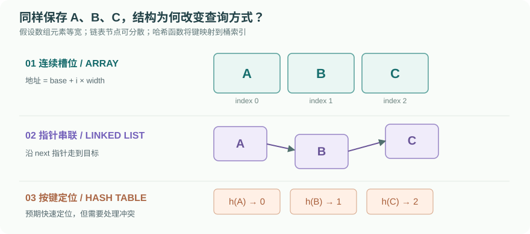
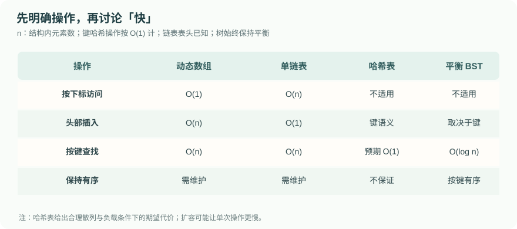

从问题出发：如何选择数据结构
数据结构不是一张名称表，而是一组对访问、插入、删除和顺序的承诺。从真实需求出发，理解抽象数据类型、实现方式和操作代价的差异。
先提出问题：为什么一种容器不够用？
设想一个系统持续收到事件，每条事件包含 id、时间和内容。你同时需要：按到达顺序处理事件、按 id 快速查找、查询最近收到的事件。把数据放进普通数组当然可以，但按 id 的搜索若只能逐项比较，最坏需要检查全部 n 条记录。
如果再建立一个 id → 记录 的映射，按键查找通常更快；如果还要先进先出地处理事件，就需要维护一个队列。不同问题不一定共用同一个最优结构，同一系统也常组合多个结构。
判断之前，应先写出操作需求：访问的是下标还是键？插入发生在头部还是尾部？是否需要保持元素有序？能容忍多少额外内存？这些条件比“哪一种结构最先进”更重要。
结构的含义：数据的布局与可执行操作
抽象数据类型（ADT）描述外部可观察行为：栈提供 push 和 pop，遵循后进先出（LIFO）；队列提供入队和出队，遵循先进先出（FIFO）。ADT 并不规定底层必须用数组还是链表实现。
具体数据结构描述如何在内存中表示元素和关系：数组用下标对应槽位，链表通过节点中的引用连接后继，哈希表通过散列结果定位桶。抽象接口与底层实现之间的区别，让我们可以改变性能特征而不改变调用方的语义。

操作代价：没有脱离场景的排名
在常见随机存取机器模型里，固定宽度数组按下标访问的代价为 O(1)；顺序链表按下标访问要逐个走节点，代价为 O(n)。但如果已拿到链表头，插入一个新头节点只需要改写少量引用；动态数组在头部插入则常常需要搬移已有元素。

| 需求 | 更适合优先考虑 | 关键前提 |
|---|---|---|
| 频繁通过整数下标读取 | 数组 / 动态数组 | 槽位可随机访问 |
| 已知头节点且频繁头插 | 单链表 | 头节点引用可直接访问 |
| 频繁按唯一键查找 | 哈希表 | 散列分布合理、可扩容 |
| 维护有序键、范围查找 | 平衡搜索树 | 保持平衡，比较器定义一致 |
用不变量理解一个栈
不变量是每次操作完成后都必须保持的性质。栈最重要的性质是：下次 pop() 返回最近一次尚未弹出的元素。用 Python 列表实现栈时，尾部就是栈顶；追加和弹出末尾符合相同接口语义。
class Stack:
def __init__(self):
self._items = []
def push(self, value):
self._items.append(value)
def pop(self):
if not self._items:
raise IndexError("pop from empty stack")
return self._items.pop()
s = Stack()
s.push("A")
s.push("B")
assert s.pop() == "B"
assert s.pop() == "A"每次操作后，_items[-1]（若非空）始终是最后入栈元素。列表尾部弹出通常是常数时间；尾部追加是均摊常数时间，而不是承诺每次扩容都不搬移元素。下一章会从操作计数推导这种区别。
若要实现 FIFO 队列，直接反复对大型列表执行 pop(0) 要移动元素，应考虑 collections.deque；这正是从操作模型选择结构的例子。
亲自选一次：哪个约束决定结构？
下面不是机械推荐表，而是在固定假设下比较一个最主要操作。实际系统往往同时有多个操作，最终需要权衡读取频率、内存和维护成本。
选择优先操作
从需求到设计的顺序是：明确主要操作 → 写出正确性和顺序约束 → 估算复杂度 → 用真实工作负载验证。反过来先选一个“喜欢”的结构，往往会在边界条件上付出代价。
性能之外：内存、局部性与演化成本
复杂度只描述输入规模增长时的量级。链表节点通常多一个或多个引用，可能增加内存和指针追踪开销；数组拥有更好的顺序访问局部性，但连续扩容或插入可能搬移元素。树需要维护平衡；哈希表需要选择键语义、处理冲突并监控负载。
一个缓存系统常同时组合哈希映射与双向链表：映射负责按键定位节点，链表负责 O(1) 地移动最近使用的节点（已知节点的前提下）。这种组合说明：“数据结构”不是背诵某个名字，而是为约束建立一组可证明的操作保证。
带走三个判断准则
- 把 ADT 的外部行为与数组、链表、哈希等内部实现区分开。
- 复杂度要标明操作、数据量 n、访问前提和最坏 / 期望 / 均摊条件。
- 工程设计可以组合结构；先说明需求，再验证性能和空间开销。
继续学习与校验资料
- MIT 6.006 Lecture Notes — 数据结构及分析模型
- Python Data Structures — 列表、栈、队列的接口行为
- 下一章：复杂度分析 — 给 O 表示法和均摊结论一个可计算的定义